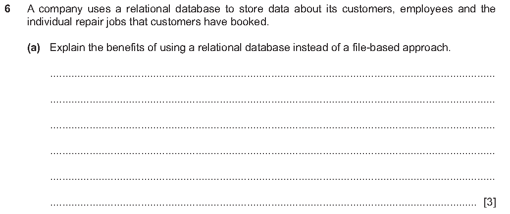
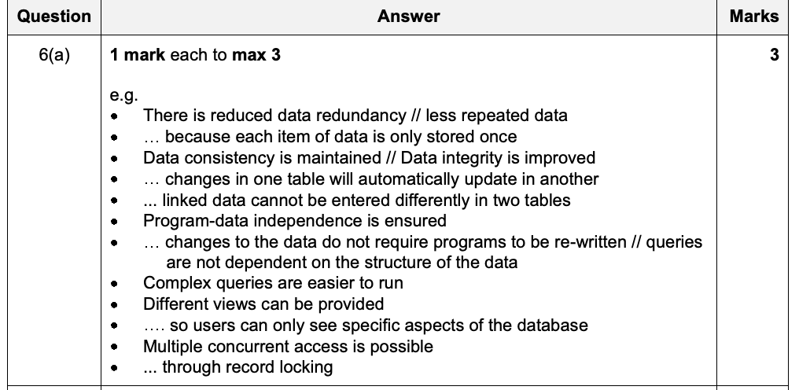

Databases · Concept 01
Why does the library need shared records?
Observe
Look, then discuss
Asha changes her contact number. How many places must the librarian correct?
Imagine a loans file and an overdue-notices file. Both store Asha’s name and contact number beside each borrowing event. The loans desk changes its copy, but the notices desk uses yesterday’s number. Predict what happens when the next reminder is sent.
Explain
Explanation · 1 / 4
Observe the repeated fact
These two records describe different activities but repeat the same member contact detail. The phone number belongs to the member, so changing it should not require finding every past loan and every separate application copy.
| Application file | MemberID | Name | Phone |
|---|---|---|---|
| Loans | 1 | Asha | 020 1111 |
| Overdue notices | 1 | Asha | 020 1111 |
Explanation · 2 / 4
Separate redundancy from inconsistency
Data redundancy is unnecessary repeated storage of the same fact. It uses storage and creates extra update work. Data inconsistency occurs when copies that should agree contain different values. Repetition creates the opportunity for this disagreement; two identical copies have redundancy even before they disagree.
Explanation · 3 / 4
Share a fact through linked tables
A relational database organises data into related tables. Store Asha’s current phone once in Member. Each Loan stores MemberID 1 to identify whose borrowing event it records. When an application needs the phone, it retrieves the shared Member value. Repeated identifiers preserve links; they do not duplicate the phone itself.
Explanation · 4 / 4
Connect other file problems to mechanisms
Separate application files may have different formats and duplicated validation or access-control code. A DBMS provides shared definitions, query facilities and centrally enforced rules. Related data can be retrieved consistently through those facilities. These benefits depend on a suitable design: merely calling a collection of files a database does not remove bad duplication.
Work together
A number changes in only one file
Initially both files store 020 1111. Asha’s correct new number is 020 2222.
Work together · 1 / 2
Trace the failed update
The loans application writes 020 2222. The notices file still contains 020 1111. A reminder reads the old number: identify the unchanged copy rather than saying only that the system is inefficient.
Work together · 2 / 2
Trace the relational update
Member 1 changes to 020 2222. Loans 201 and 202 keep MemberID 1. Both applications follow that identifier to Member and obtain 020 2222. Neither loan needs a separate phone correction.
| Location | Stored information after correction |
|---|---|
| Member 1 | Asha; phone 020 2222 |
| Loan 201 | MemberID 1 |
| Loan 202 | MemberID 1 |
Explain a benefit by naming the original problem, the new mechanism and the resulting improvement.
Experiment
The experiment uses a name change to test the same mechanism as the contact-number example. Predict which of three copied names changes after one local edit. Then update the shared Member name and explain why all related displays agree.
One member, three places to update
Member 1 is the same person at the borrowing desk, membership office and reminder list. The left table stores three copies of the name; the right table reads one shared Member record.
Predict: Which displays will change when you update one stored value?
Predict what will change before using an action.
Check
Explain it yourself · Teacher-written
If MemberID 1 appears in twenty loans, has the relational design failed to reduce redundancy?
Check your reasoning
No. Each occurrence records which member belongs to that particular loan. The avoidable repeated fact is the member’s phone or name, which can be retrieved from one Member record. The identifiers preserve twenty distinct associations.
Past paper
Attempt the past-paper questions · 3 marks
1 original question · 1 selected part · 3 marks
Suggested independent working time: 3–6 minutes (teacher estimate).
Answer the original questions first. Open guidance, a teacher solution or the official mark scheme when needed. Only the named parts are assigned; extracts also retain their required shared context.
Original question · Cambridge 9618/12
1. Explain the move to a relational database
Cambridge 9618/12 · October/November 2024 · 6(a) · 3 marks
Selected parts: 6(a) [3].

Hint — reading the question
Explain benefits compared with separately maintained files. Use the repair company to make the effect of each benefit clear.
Reasoning and model answer — teacher-written
A customer’s details can be stored once and referenced from their repair jobs, reducing repeated data. Updating that single customer record means that queries for their jobs use the same current details, improving consistency. Different views can show employees only the information needed for their work.
Official mark scheme

Why this earns marks — teacher explanation
The scheme accepts three points at most. Redundancy, consistency, independence, queries, views and concurrent access are alternatives, not a requirement to list everything.
Common mistakes — teacher analysis
A relational database does not automatically copy every change into every table. In this example, jobs reference the same customer record; referential constraints and update rules govern changes to keys.
Cambridge past-paper access page ↗ · Source references and page numbers are shown with each extract. © Cambridge University Press & Assessment / UCLES.
Connect
Keep this idea
Store shared facts with the object they describe and use identifiers to connect related records.
To design those tables, first decide what an entity, a record and a field represent.
Check a common misunderstanding
A database can still contain redundant or inconsistent data when its design and update rules are poor.
Learning goals
- Explain limitations of a file-based approach to storing and retrieving data.
- Describe relational features that address particular file-based limitations.